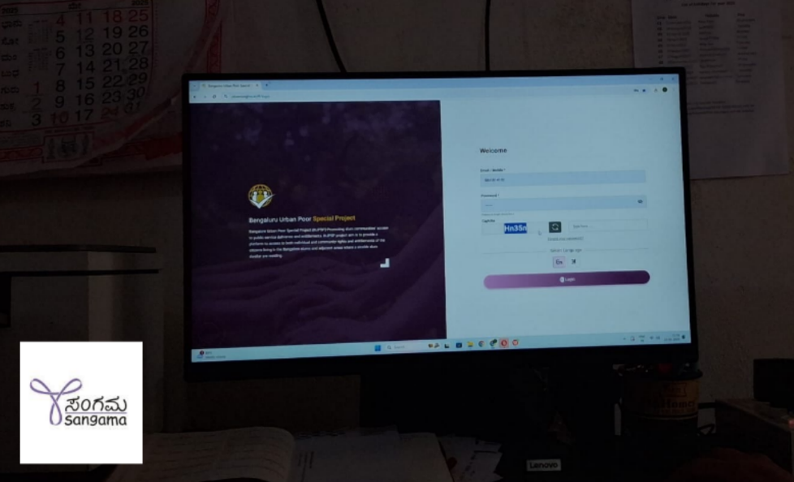
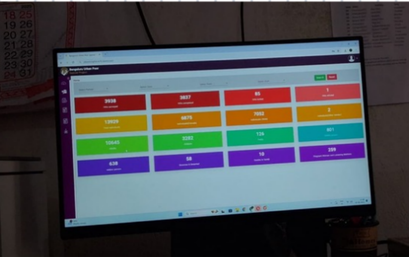

Voices on Thursdays: Community and Technology in Action at Sangama Organization

Our fifth day of field immersion was spent at the Hegganahalli Resource Center of Sangama Foundation, a shift from our originally planned visit to the Rajagopalnagar CRC[cite: 43]. This change was intentional, as the community organizers had scheduled specific community meetings and field exposure activities here[cite: 43].
We began the day by meeting Rukshar Salma, the Eco Coordinator of the Hegganahalli center[cite: 43]. Since the MIS Coordinator was away on international travel, Rukshar took the lead in walking us through their digital systems and data management practices[cite: 43]. We got to explore how BUPSP (Bangalore Urban Poor Special Project) app and its server dashboard were used to manage entitlements, update field records, and log community needs[cite: 43].

Interestingly, we observed that the BUPSP interface remains uniform across all organizations whether at Sangama or our earlier visit to Maarga[cite: 44]. This reinforced the idea that the tool is standardized for all field partners and isn't customized for each NGO[cite: 44]. The data dashboards looked the same, and the fields, forms, and progress tracking sections all mirrored what we had seen before[cite: 44].
Exploring Community Institutions
After the dashboard review, Rukshar took us into the field for a closer view of the area[cite: 44]. This included:
- A Public Health Center (PHC): well maintained, clean, and actively used by the local population[cite: 44]. We learned that vaccination drives take place every Tuesday, making it a busy hub for healthcare access[cite: 44].
- A local government school nearby, which had a large playground and was visibly in good shape[cite: 44].
- Several Anganwadis (government run preschools) while some were spaced well, we noticed that others were clustered too close together, leaving certain areas underserved[cite: 44].
This exploration gave us a concrete sense of how basic services like health and education were being delivered at the ground level and also what gaps remain[cite: 44].
Community Meeting at Najma's Settlement
One of the highlights of the day was participating in a community meeting organized by Najma, a Community Organizer, in a settlement known as Billa Masjid area[cite: 44].
Najma and Rukshar had pre-planned this meeting, it's a regular Thursday gathering, where community members, most of whom are Muslim, come together to share their concerns[cite: 44]. This format not only ensures that community voices are heard but also helps Sangama maintain a feedback loop between the field and the resource center[cite: 44, 45].
Structure of the Meeting:
- Language of communication: Urdu (which made the interaction more inclusive for everyone)[cite: 45]
- Participants: Around 10-15 community members[cite: 45]
Facilitation flow:
- The organizers welcomed the group and revisited previous meeting takeaways[cite: 45]
- The day's agenda was explained[cite: 45]
- Najma invited people to speak about new community level issues for example, faulty electric poles or public infrastructure problems[cite: 45]
- Rukshar noted each concern, with a plan to take them back to the CRC, where they'd escalate to respective departments (e.g., BBMP, BESCOM)[cite: 45]
At the end of the session, snacks were distributed a small but thoughtful way to encourage participation and create a positive social environment[cite: 45]. We learned that this practice was introduced to boost attendance and build trust over time[cite: 45].
Key Observations
- The use of digital tools like BUPSP remains crucial not just for data, but for accountability and real time tracking of entitlements[cite: 45].
- Community meetings like this are more than just problem solving forums; they are spaces of dignity, inclusion, and voice[cite: 45].
- Having meetings conducted in regional languages like Urdu builds greater comfort and confidence for the participants[cite: 45].
- Sangama's approach shows that technology and trust building go hand in hand[cite: 45]. Tech helps track what's happening, but the real work happens in person, when someone listens to the community directly[cite: 45].
My Reflection
Today, I didn't just observe a meeting, I witnessed how decentralized, low tech planning can be deeply human and effective. Sangama doesn't just connect services; it connects people to each other.
Note: All photos included in this post were taken with the informed consent of the community members and Community Organisers (COs). We deeply respect their dignity, stories, and trust, and thank them for allowing us to document their environment and experiences.